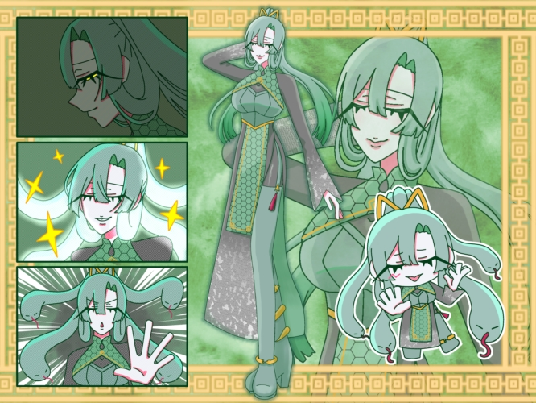
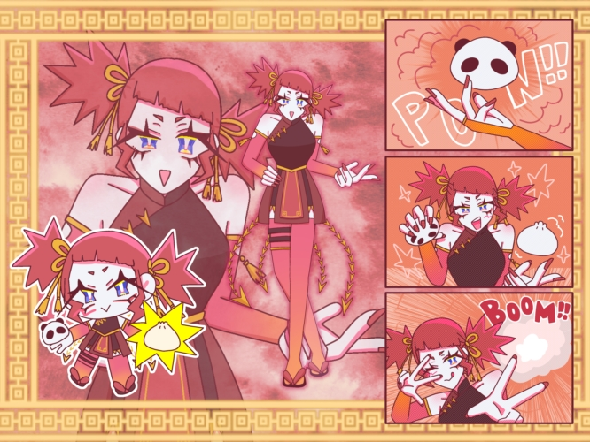
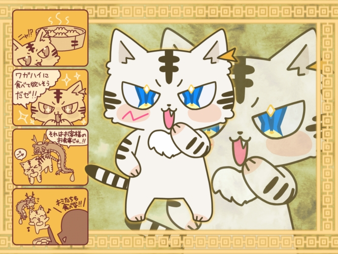
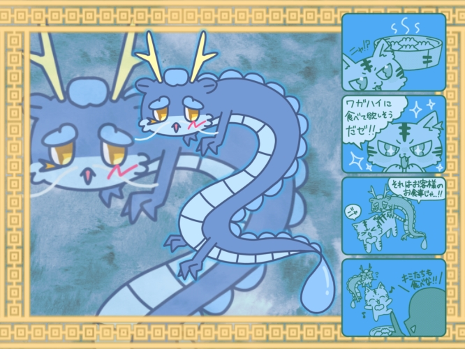

四神飯店について
目次
1. 四神飯店のストーリー
食材の嫌われの感情を魔王から植え付けられた魔物が存在する世界。その魔物を浄化する特別な力を持った選ばれし者が存在している。商店街の少し外れにある知る人ぞ知る町中華の名店である四神飯店は、その魔物を浄化する力を持った玄霞が店主である。幼いころから店の常連であり、玄霞にあこがれ弟子入りをした明るく元気な少女、紅焔。ある日、四神飯店に迷い込んだ小さな獣の虎鈴と小さな龍の碧涛と共にストーリーが進んでいく。
2. キャラクター紹介：玄露（シュエンシア）

玄露（シュエンシア）：玄武モチーフ。四神飯店の店主。年齢不詳で静かな笑みの裏に底知れぬ力を感じさせる。戦闘時は髪の毛が蛇になり中距離攻撃で邪を祓う。また、頑丈な防御魔法も使いこなす。
3. キャラクター紹介：紅焔（ホンイェン）

紅焔（ホンイェン）：朱雀モチーフ。玄霞にあこがれ、四神飯店で修行中の明るく元気な少女。彼女のおかげで店内はいつも賑やかで活気がある。戦闘時は点心型の爆弾を作り出し、それを用いて戦う。
4. キャラクター紹介：虎鈴（フーリン）

虎鈴（フーリン）：白虎モチーフ。ある日、四神飯店に迷い込んだ小さな獣。とても食いしん坊で、客の食べ物にも目を輝かせる。好奇心旺盛、自由奔放な性格で、碧涛をよく困らせている。
5. キャラクター紹介：碧涛（ビータオ）

碧涛（ビータオ）：青龍モチーフ。ある日、四神飯店に迷い込んだ小さな龍。静かで気弱な雰囲気だがしっかり芯がある。自由奔放な虎鈴によく振り回されているがなんやかんや仲が良い。